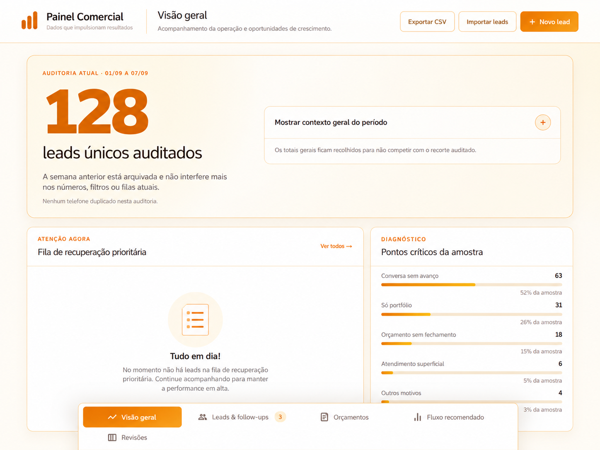
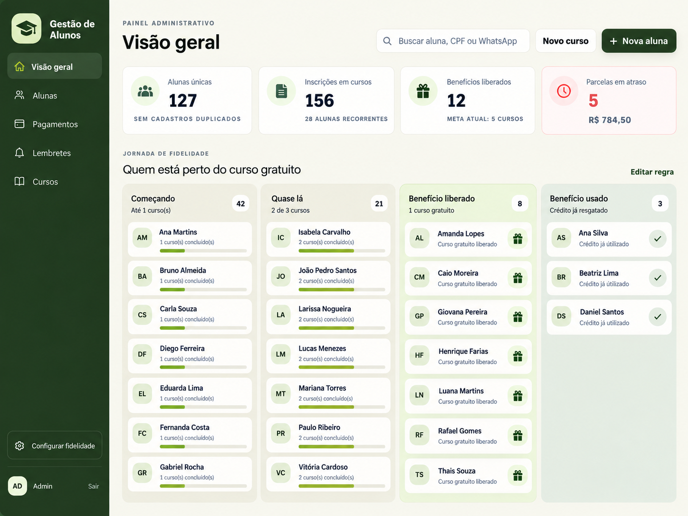
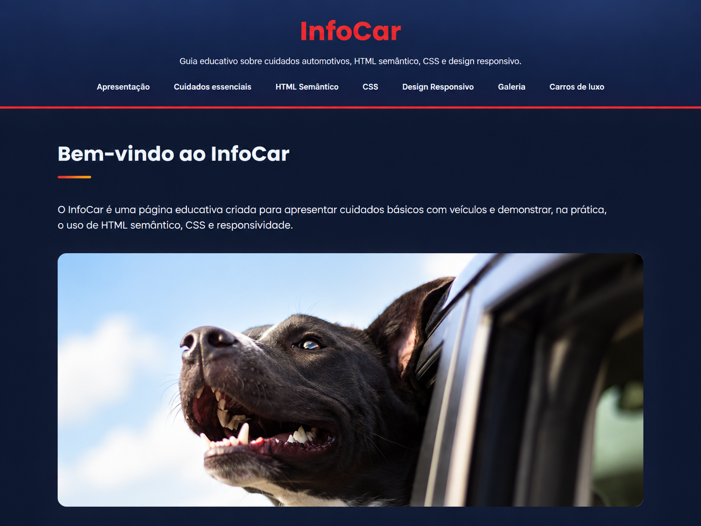

Organização de Processos
Estruturação de rotinas, informações e fluxos de trabalho para tornar operações mais organizadas e eficientes.
Maria Vitoria Benaglia
Operações • Customer Success • Processos • Soluções Digitais
Sou Maria Vitoria Benaglia. Minha trajetória conecta operações comerciais, atendimento, experiência do cliente e organização de processos ao desenvolvimento de soluções digitais práticas.
Projetos e competências que unem negócio, pessoas e tecnologia.
Sobre minha trajetória
Minha experiência profissional envolve organização de rotinas, acompanhamento comercial, atendimento e relacionamento com clientes. Ao longo dessa trajetória, desenvolvi soluções para facilitar processos de gestão de leads, acompanhamento administrativo e organização de informações.
Atualmente, também estudo Administração e desenvolvimento de soluções digitais, buscando conectar processos, experiência do cliente e tecnologia na criação de ferramentas práticas para empresas e equipes.
Estruturação de rotinas, informações e fluxos de trabalho para tornar operações mais organizadas e eficientes.
Acompanhamento da jornada, relacionamento e organização de demandas com foco na experiência do cliente.
Desenvolvimento de ferramentas e interfaces voltadas à organização de processos comerciais e administrativos.
Projetos e áreas profissionais que representam minha experiência com organização, operações, relacionamento com clientes e desenvolvimento de soluções digitais.
Projeto
Solução desenvolvida para centralizar a organização de leads, etapas do pipeline, follow-ups e acompanhamento de uma operação comercial.
Apresentado exclusivamente com informações demonstrativas e anonimizadas.
Ver projeto →Projeto
Solução administrativa criada para apoiar a organização de alunos, cursos, parcelas, vencimentos e acompanhamento de pagamentos.
Todos os dados utilizados nas demonstrações são fictícios ou anonimizados.
Ver projeto →Projeto
Projeto web desenvolvido durante a formação Koodie, com foco em HTML semântico, CSS, acessibilidade e responsividade.
Ver projeto →Competência
Organização de rotinas, atendimento, acompanhamento de demandas e suporte administrativo.
Competência
Acompanhamento da joranada do cliente, relacionamento e melhoria contínua da experiência.
Cases demonstrativos de soluções criadas para apoiar processos comerciais, administrativos e digitais, sempre preservando informações privadas.

Organizar diferentes informações da operação comercial e facilitar o acompanhamento de leads, etapas do funil e follow-ups em um único ambiente.
Estruturação de uma interface de dashboard que centraliza o acompanhamento comercial e facilita a visualização das principais etapas da rotina.

Reunir informações administrativas que antes poderiam ficar distribuídas entre diferentes controles, dificultando o acompanhamento de alunos e pagamentos.
Desenvolvimento de uma interface centralizada para organizar alunos, cursos, parcelas, vencimentos e situações de pagamento de forma mais clara.

Transformar conhecimentos iniciais de desenvolvimento web em uma página profissional, acessível, organizada e preparada para diferentes tamanhos de tela.
Construção de uma Landing Page utilizando HTML5 semântico e CSS3 externo, com organização clara de conteúdo, hierarquia de títulos, acessibilidade e responsividade.
Estou aberta a oportunidades e projetos relacionados a operações, organização de processos, Customer Success e soluções digitais.